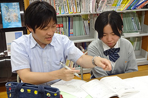
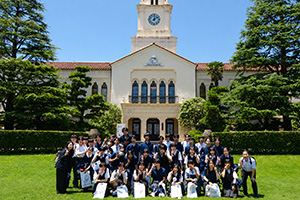
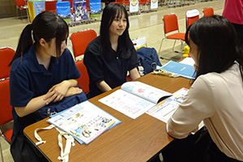

進学コース
放課後や土曜日は課外講座や部活動など、多くの選択肢の中から自分を磨く時間を自由に選べます。 このため部活動と勉強の両立をめざすことも可能です。
２年次より文系と理系に分かれ、大学進学に向け得意分野を徹底的に伸ばします。 一般選抜に対応できる学力をつけるだけでなく、部活動や探究活動の授業を生かした総合型選抜、学校推薦型選抜などその生徒にもっとも適した方法で志望校をめざします。
| 文系選択 | 国語・英語・地歴・公民を重点的に学びます。幅広い進路に対応できるよう文系科目だけでなく、理数系科目の力もつけられるカリキュラムを設定しています。 |
| 大学での学び ≫ 文学・歴史学・経済学・国際関係学・語学・法学・教育学・心理学 など | |
| 理系選択 | 数学・英語・理科の授業時間を多く設定しています。自然科学分野を深く学ぶことで、社会に貢献するための専門的な知識を養います。 |
| 大学での学び ≫ 情報工学・機械工学・生物学・薬学・栄養学・農学・看護学 など | |
進学課外講座 放課後や土曜日、長期休暇中に多くの課外講座を設定しています。大学入試や検定の対策など自分の目的に合わせて選択できます。
個別指導＆自主学習
個別指導を受けたり自主学習をしたりする場として、進路センターを開放しています。
（平日は１９時、土曜日は１２時まで）
毎日放課後には個別学習や学び合いに励む姿が見られます。
部活動
進学コースには部活動に打ち込みながら、大学進学をめざす生徒が多くいます。部活動での努力や実績が学校推薦型選抜や総合型選抜にも生かされます。
土曜日課外講座
土曜日は希望者のために課外講座を開設しています。
進学コースでは、ベネッセのeプラットフォーム「Classi」を導入し、生徒一人ひとりに最適な学びの機会提供をしています。
サタデースクール希望者には復習に重点を置いた課題を配信し、中学時代にまでさかのぼって弱点を克服することで、つまずきを解消します。
高校１年次、２年次の英語・国語・数学の重要事項の復習にも徹底して取り組み、基礎的内容の反復で着実に力をつけます。
一般選抜はもちろん、学校推薦型選抜・総合型選抜の対策も充実しています。それぞれの生徒の個性に応じた細やかな進路指導を行うことで、高い現役合格率を実現しています。
|
 |
面接・志望理由・小論文対策 コースとして特に国公立大学の学校推薦型選抜・総合選抜をバックアップしています。 生徒一人ひとりに指導教員を割り当てるなど、対策を徹底しています。 ３年生の進学希望者を対象にして進学模擬面接を実施しています。 また、総合探究においては社会の課題にさまざまな面からアプローチし、課題解決能力を磨き、入試においてその力を発揮できるようサポートしています。 |
|
 |
進学コース大学見学 ２年次に大学見学を実施しています。 近年では高知工科大学、高知県立大学、近畿大学、関西学院大学、武庫川大学を訪問しました。 進路研究と小旅行を兼ねた充実したイベントとなっています。 |
|
 |
進学イベント 毎年、「マイナビ進学ライブ」に参加しています。 イベント参加に先立って、マイナビの講師からレクチャーを受けます。 事前に入念な下調べを行うことで、大学ごとの特徴的な教育内容、類似の分野を持つ他大学との違いについて中身の濃い面談をすることができ、進路意識を高めることにつながっています。 |
一般選抜
香川大学 愛媛大学 埼玉大学 鳥取大学 県立広島大学 山口県立大学
尾道市立大学 高知県立大学 中央大学 法政大学 青山学院大学
日本獣医生命科学大学 成蹊大学 立命館大学 近畿大学 龍谷大学 武庫川女子大学
大阪経済大学 川崎医療福祉大学 防衛大学校 など
総合型選抜(旧・AO入試)
・学校推薦型選抜(旧・推薦入試)
広島大学 香川大学 高知大学 島根大学 鹿屋体育大学 香川県立保健医療大学
高知工科大学 高知県立大学 島根県立大学 大分県立芸術文化短期大学 上智大学
日本大学 日本体育大学 国士舘大学 順天堂大学 立命館大学 関西大学 近畿大学
関西外国語大学 京都産業大学 同志社女子大学 神戸女学院大学
ノートルダム清心女子大学 松山大学 福岡大学 など